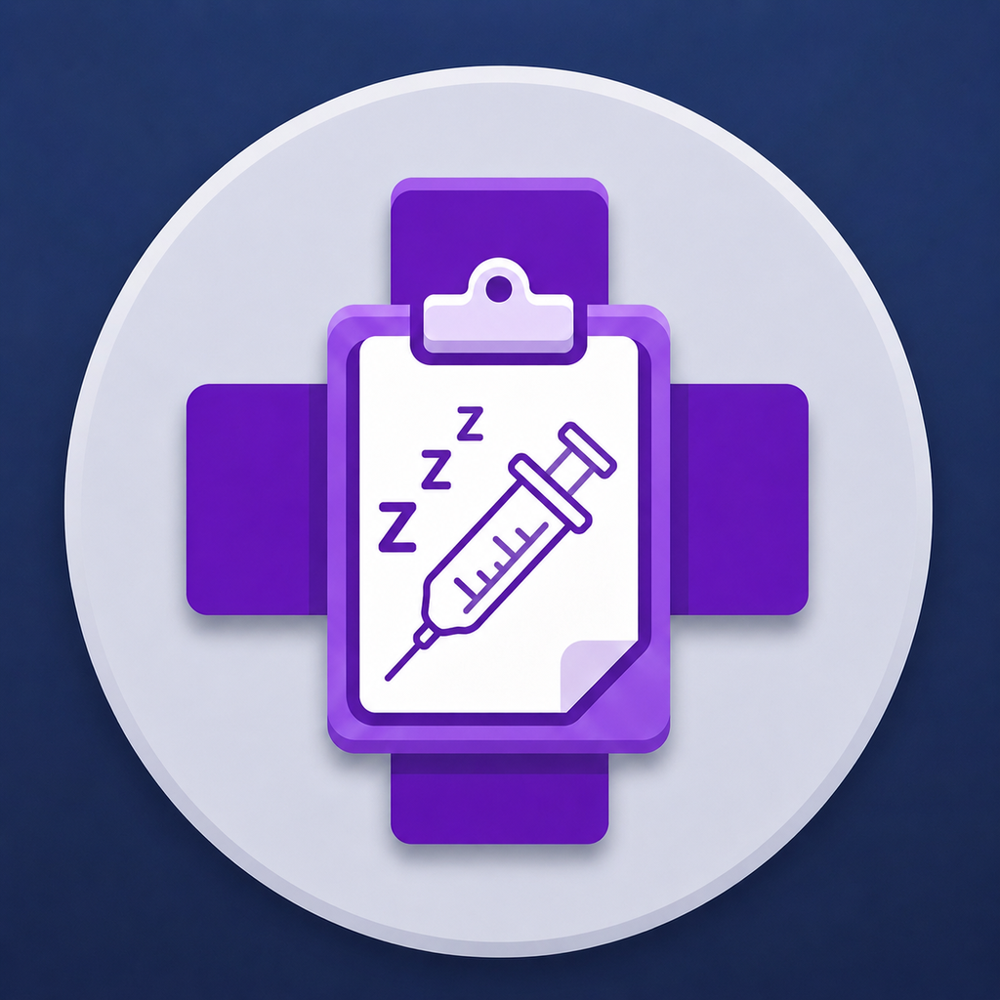
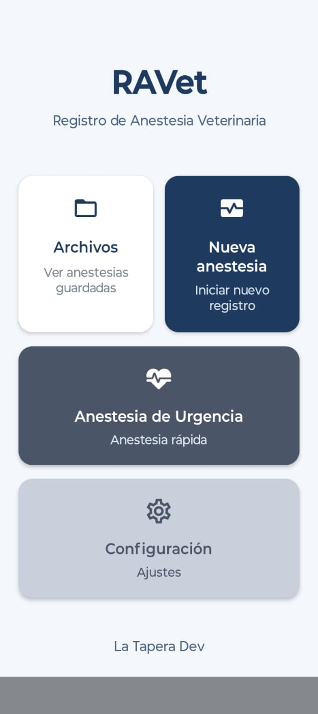

RAVet
RAVet es una app que permite recopilar toda la información durante una anestesia. Información del paciente previa, datos de la anestesia, monitoreo y registro de eventos. Todo en un solo lugar y de manera simple.
Descargar en Google Play
RAVet es una app pensada para hacer de manera digital la funcion de las planillas de anestesia.
RAVet (Registro de Anestesia Veterinaria) es una aplicación móvil, pensada como herramienta de apoyo para el anestesista veterinario. Su objetivo es reemplazar la ficha anestésica en papel por un registro digital que se completa en tiempo real durante el procedimiento y que, al terminar, produce un informe profesional en PDF listo para compartir.
Qué problema resuelve
Durante una anestesia, el profesional debe administrar fármacos, calcular dosis según el peso, vigilar constantes vitales, anotar horarios y registrar todo lo que ocurre, a menudo con las manos ocupadas y poco tiempo. RAVet concentra esas tareas en una sola herramienta: calcula las dosis, mide los tiempos y deja cada dato con su marca temporal, de modo que el informe final se arma solo a partir de lo registrado.
Cómo funciona
La app sigue el recorrido natural de una anestesia:
Datos iniciales: información general (fecha, cirujano, veterinaria, propietario), datos del paciente (especie, raza, sexo, edad, motivo) y evaluación preanestésica (peso, ASA, condición corporal, deshidratación, estudios complementarios, constantes vitales y ayunos). Premedicación e inducción: se eligen los fármacos de una lista, se indica la vía (IM, IV o SC) y se ingresa la dosis en mg/kg o el volumen en ml. El botón de cálculo completa el otro valor y la dosis total a partir del peso y la concentración. Mantenimiento: un cronómetro mide el tiempo de anestesia. Los parámetros (FC, FR, temperatura, SpO₂, PAS y PAD) se ajustan con selectores deslizables o botones +/−, la PAM se calcula sola y cada cambio queda registrado con su tiempo. Se pueden administrar fármacos intravenosos y registrar la anestesia inhalatoria (gas, flujo de O₂, dial), con estimación de la CAM según la especie y un indicador de color (amarillo, verde o rojo). También se anotan acontecimientos relevantes. Bloqueos regionales: un panel lateral, accesible desde premedicación, inducción y mantenimiento, registra tipo de bloqueo, lado, guía utilizada, anestésicos, coadyuvantes y redosificaciones, con el tiempo transcurrido desde cada bloqueo. Recuperación: se marca el momento del despertar, se calculan los tiempos totales y de recuperación, y se cargan observaciones y la medicación analgésica y antiinflamatoria posterior. Resumen e informe: todo se consolida en un documento con encabezado RAVet, datos del profesional anestesista y secciones ordenadas, que se comparte como PDF.
Características de apoyo
Alarma configurable que recuerda controlar los parámetros a intervalos definidos por el usuario, o se desactiva. Fármacos personalizados que el usuario puede agregar a cada etapa, con control de duplicados, y que se conservan en la configuración. Configuración del anestesista (nombre, matrícula, teléfono, email), que aparece en el informe. Archivo local: cada anestesia se guarda como JSON en el dispositivo, con un índice. La sección Archivos las organiza por mes y año y permite revisarlas en modo lectura o volver a generar el PDF. Cierre de la anestesia: al compartir el informe de una anestesia activa, esta se cierra y ya no puede editarse, lo que da integridad al registro. Registro RAVet: una vista de tabla con parámetros, dosis y acontecimientos a lo largo del tiempo.
En una frase
RAVet es una ficha anestésica digital para veterinarios: calcula, cronometra y registra la anestesia en tiempo real, y entrega un informe PDF completo y ordenado, funcionando de manera local en el teléfono.

RAVet
Disponible gratuitamente para dispositivos Android.
DescargarDescargala, probala y contanos tu experiencia.